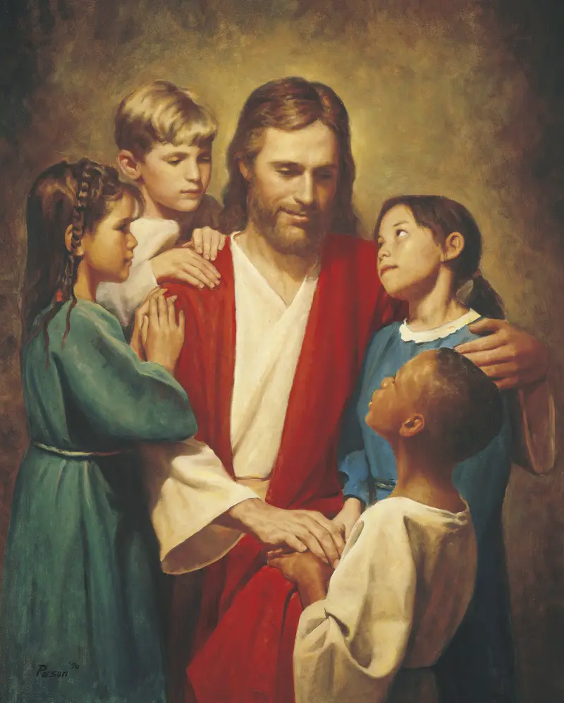

Temes de Fe
Explora les respostes a les preguntes més importants de la vida. Troba esperança, propòsit i pau.
Explora les respostes a les preguntes més importants de la vida. Troba esperança, propòsit i pau.

Per què som aquí? Descobreix el pla que Déu té per a tu i per a cadascun dels seus fills.
Explorar →
Ell és el centre de la nostra fe. Coneix la seva vida, els seus ensenyaments i com el seu amor pot transformar la teva.
Explorar →
El primer pas en el camí del discipulat. Descobreix per què el baptisme és essencial en el pla de Déu.
Explorar →
La família és central en el pla de Déu. Descobreix com enfortir per sempre els llaços familiars.
Explorar →
Parla amb Déu. Ell t'escolta i vol respondre les teves preguntes i guiar-te en el teu camí.
Explorar →
Mai no és tard per tornar a començar. El canvi és possible gràcies a Jesucrist.
Explorar →
Llocs sagrats on les famílies es poden unir per sempre i fer pactes amb Déu.
Explorar →
Per què era necessària una restauració? Descobreix com l'evangeli complet de Jesucrist va tornar a la terra.
Explorar →
Un altre testament de Jesucrist, escrit per antics profetes del continent americà. Un llibre que canvia vides.
Explorar →
D'on venim? Quin és el propòsit d'aquesta vida? Què ens espera després de la mort?
Explorar →No importa on et trobis en el teu camí espiritual. Som aquí per escoltar-te, acompanyar-te i ajudar-te a trobar respostes.
Parla amb nosaltres sense cap compromís. La teva recerca és important.
Parlem-ne